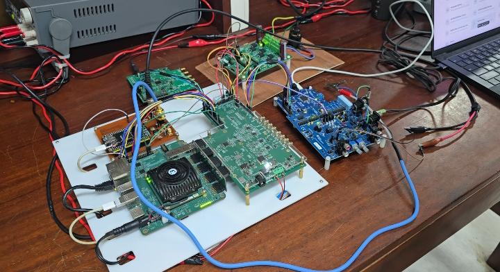
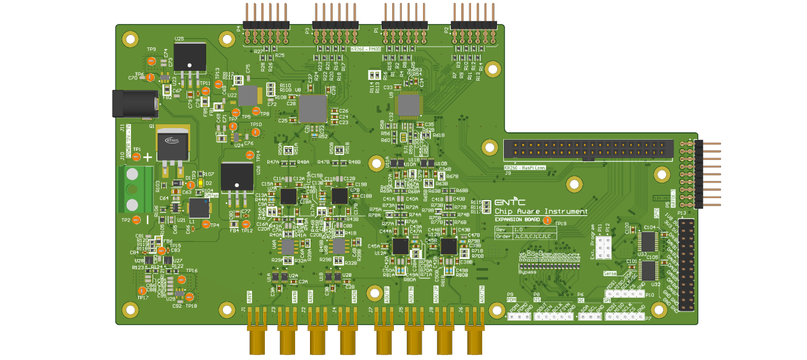
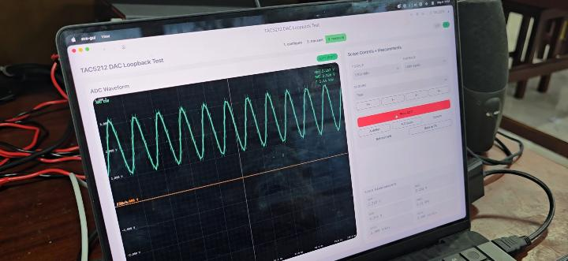
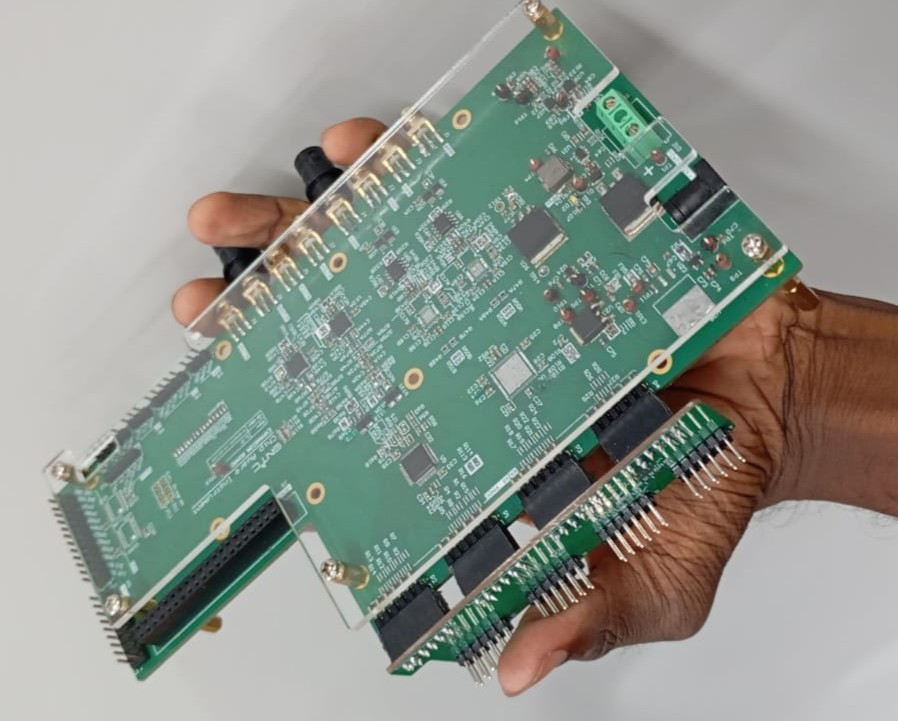

Chip-Aware Instrument
The Chip-Aware Instrument is a unified hardware/software platform designed for comprehensive IC configuration, evaluation, and characterization. This system bridges the gap between design and practical implementation, and aims to cut down the cost of development, time to development and the barrier of entry for new chip choices. Usually when choosing a new chip for the design, engineers have to buy an evaluation board and spend considerable time and resources on learning and testing. Further each IC requires its own evaluation board costing hundreds of dollars, with each requiring vendor-specific tools and documentation. Our platform aims to unify this effort and cut down the time of getting familiar.
Our solution contains a datasheed to ICED file generation pipeline, with which the datasheet is first read into a markdown file with the help of several extraction tools, and upon verification converts the markdown into a yaml file called "ICED" describing the registers, interfaces, configuration sequences, power sequences, absolute ratings, etc. Then this file is used by an agentic pipeline to generate a dynamic GUI with the workbenches unique for the device under test. The software uses a server-client approach to communicate with the hardware.
For the hardware, a Linux OS is running on an ARM processor on programmable software part on a KR260 Robotics Starter Kit FPGA Board, on which a Daemon process interfaces the commands from the software recieved through ethernet to the HAL layer. The HAL layer interfaces the software part with the IPs that are on the programmable logic part of the FPGA. These IPs integrate with the expansion board in order to communicate with the device under test.
The expansion board is a 6 layer PCB interfaced with the FPGA. The purpose of this is to interface the 3.3V digital only IO of the FPGA to the analog, 5V / 3.3V / 1.8V signals. This contains an ADC and a DAC with each able to provide analog signals between 100 Hz - 7.5 MHz. On board there is a GPIO expander which is able to provide additional GPIO pins which are also capable of prividing PWM outputs. These and the digital signals such as SPI, I2C, I2S, PDM are then sent through a set of volatge translators of which the output volatge is selectable with the platform. The analog signals are sent through a programmable gain array to allow a wider dynamic range of 4Vpp. Further each ADC and the DAC are provided with an onboard PLL. Each of the units have been provided with seperate power domains for the best noise isolation and test domain sepeartion.

FPGA Integration
The KR260 Robotics Starter Kit FPGA Board, connected to the expansion board, and 2 evaluation boards and a custom PCB hooked up as devices under test
Software Platform
The dynamic GUI which has generated a waveform viewer workbench for the TAC5212 on real-time

Expansion board
The expansion board connecting the FPGA to the device under test